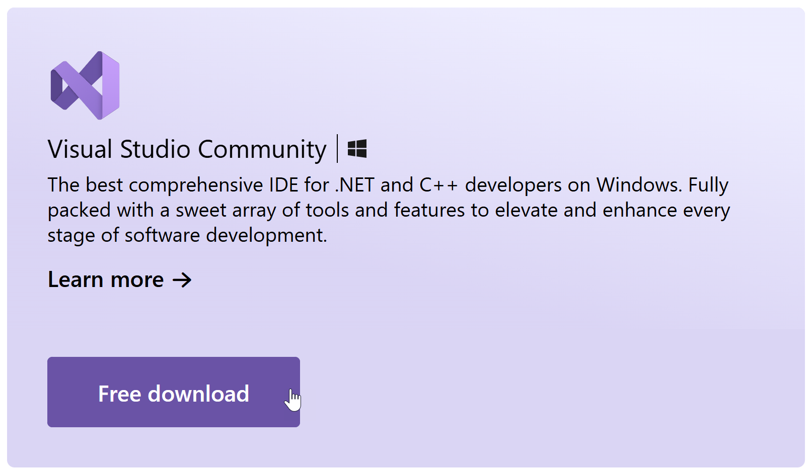

Wat is programmeren
.NET Framework
Als je programmeert, maak je altijd gebruik van bundel vooraf geschreven code waarop je kan voortbouwen. Het zou niet handig zijn als je bij elk programma opnieuw knoppen, dialoogvensters, scrollbars enz... vanaf nul moet programmeren! Een dergelijke bundel noemt men een framework.
Frameworks bestaan in veel gebieden:
- game programming: Unity3D, Unreal, ...
- web & mobile apps: Ionic, Phonegap, React, Angular, ...
- 3D programming: ThreeJS, Babylon, ...
- …
In deze cursus gebruiken we het .NET Framework: het is weliswaar voornamelijk gericht op Windows apps, maar ook op mobiele (Android bv) of cloud toepassingen. Het werkt bovendien naadloos samen met C#.

Fasen van een programma
Een programma is een opeenvolging van instructies die in een bepaalde volgorde worden uitgevoerd. De verschillende fasen van een programma:
- programma schrijven, bv. in C#
- code compileren: code wordt omgezet naar platform-onafhankelijke Common Intermediate Language (CIL) bytecode, wat resulteert in een PE-file (Portable Executable)
- code uitvoeren: de .NET Common Language Runtime (CLR) vertaalt tijdens de uitvoering de bytecode in platform-specifieke machine-instructies

Soorten fouten
In elke fase van het programma kunnen fouten optreden:
- syntax error: je code bevat een fout tegen de vormregels van de programmeertaal, bv. puntkomma of haakje vergeten
- build error: je code is correct geschreven, maar tijdens het builden loopt iets fout, bv. een bibliotheek wordt niet gevonden
- runtime error: je code compileert netjes, maar tijdens het uitvoeren loopt je programma vast, bv. een onverwachte deling door nul, geheugenfout, bestand wordt niet gevonden enz...
- logical error: je programma loopt niet vast, maar doet niet wat je verwacht, bv. de output is verkeerd of een knop werkt niet
Integrated Development Environment (IDE)
De ontwikkelomgeving of Integrated Development Environment is de omgeving waarin je programma's ontwikkelt. Typische features van IDE's:
- werken met solutions & projecten
- code schrijven: code editor, code hints, automatische layout, object browser...
- interfaces bouwen (vensters, knoppen, menu's...) met de designer
- programma's builden en runnen, eventueel simulators (bv. mobiele devices)
- tools om te debuggen (foutopsporing),
- testen: unit tests, performantie metingen, analyse geheugengebruik...
- samenwerking: versiebeheer, code review, live sharing...
- distributie: cloud integratie, publicatie op het web...
- ...
De meest gebruikte omgeving voor C# Visual Studio (versie 2022 op moment van schrijven).
Installatie installeren VS2022
Downloaden
Download en installeer Visual Studio gratis vanop https://visualstudio.microsoft.com/free-developer-offers/ (Visual Studio Community)

Keuze workload
In Visual Studio kan je programmeren in verschillende talen (en zelfs meerdere tegelijk in één project): Javascript, Python, C++, Visual Basic, R, F#, C#... en voor verschillende platforms (Windows, Azure, Android, Web…). Daarom biedt Visual Studio een heel aantal verschillende standaardomgevingen, workload genoemd, met tools, omgeving enz... aangepast aan jouw specifieke ontwikkelingsbehoeften. Wij gebruiken de .NET desktop environment; let er dus op dat je de juiste omgeving kiest tijdens installatie.
Selecteren individuele componenten
Je kan tijdens installatie (of achteraf) individuele componenten kiezen, b.v. support voor oudere versies van .NET. Je kan dit deel voorlopig overslaan; individuele componenten kan je achteraf nog altijd selecteren via de Visual Studio installer.
Solutions en projecten
Solution vs. project
- een project groepeert alle bestanden die bij één programma horen: codebestanden, afbeeldingen, configuratiebestanden...
- een solution groepeert een aantal projecten die om één of andere reden logisch bij elkaar horen
Hoe code georganiseerd wordt in solutions en projecten hangt af van vak tot vak. Voor Introductie in Programmeren (ORP42a, graduaat) en OO Application Development (OBI25a, bachelors) wordt gekozen voor één solution per les, één project per oefening. Hieronder een screenshot van een typische les geopend in Visual Studio.
Je herkent:
- de solution SlnBasis; dit is de les waamee we bezig zijn
- de projecten ConsoleAsciiArt, ConsoleGedicht, ConsoleHalloWereld...; dit zijn de oefeningen behorende bij die les
- de bronnen Properties, References, App.config, Program.cs onder ConsoleHalloWereld: dit zijn de bestanden/mappen behorende bij die oefening
- het codevenster links: hierin schrijf je je code
Les (=solution) openen
In Visual Studio open je nooit een folder, maar een solution. Dit doe je door te dubbelklikken op het .sln solutionbestand van die les in verkenner:
Oefening (=project) toevoegen
Voor elke oefening voegen we een nieuw project toe aan de solution van die les. De eenvoudigste manier is met de rechtermuisknop op de solution, Add, New Project...:
In het volgende venster kan je kiezen uit heel veel projecttypes. In het volgende dialoogvenster je filtert best alvast op taal (C#) en platform (Windows):
Project types
In eerstejaarsvakken komen hoofdzakelijk deze twee types aan bod:
- Console application: programma uitgevoerd in een simpel commandprompt-achtig venster
- WPF application: een typisch Windows programma in een venster met menu’s, knoppen, dialoogvensters, scrollbars…
Op het einde van OO Application Development komt ook nog de class library aan bod, maar dat is voor dit hoofdstuk.
Console toepassingen hebben beperktere mogelijkheden dan WPF; daar staat tegenover dat je kan focussen op de essentie van leren programmeren. WPF toepassingen aan de andere kant laten toe snel een interface te bouwen met knoppen, menu's, sliders, date pickers enz... wat het dan weer makkelijker maakt complexere toepassingen te bouwen, al vraagt het meer kennis van Visual Studio. Sommigen studenten schrijven liever console toepassingen, anderen geven de voorkeur aan WPF, maar bij de meesten is er geen duidelijke voorkeur.
Wij zijn ervan overtuigd dat beide projecttypes elkaar aanvullen als manier om te leren programmeren.
Console Application
Een console applicatie draait dus in de console, i.e. een soort commandprompt-achtig venster. De mogelijkheden zijn beperkter dan bij WPF toepassingen, vooral grafische en UI componenten ontbreken. Enkele voorbeelden van wat wel/niet kan:
- tekst in- en output
- voor- en achtergrondkleur
- muziek en andere geluiden
- bestanden lezen en schrijven
- werken met databanken
- grafische vormen als ellipsen, rechthoeken...
- form controls
- video
- UI componenten als menu's, scrollbars...
- dialoogvensters (bestanden openen e.d.)
Aanmaken
Om een console toepassing te maken, open je eerst de solution van de les. Dan voeg je zoals steeds een project toe met Add, New Project...:
In het volgende venster kies je voor Console App:
Je vindt mogelijks nog andere versies zoals Console App (.NET Core) of Console App (.NET Framework). Dit zijn (sterk) verouderde types, die mag je niet gebruiken! Let er dus op dat het type exact is als op de screenshot.
Kies de naam van het project exact hetzelfde als de naam van de oefening:
In het laatste venster kies je voor de laatste versie, en duid aan dat je geen top-level statements wil:
Voorbeeld: ConsoleHalloWereld
Tenslotte kan je de code van het programma intypen:
Run het programma via F5 of deze knop:
Het programma in actie:
WPF Application
WPF staat voor Windows Presentation Foundation, een technologie van Microsoft om Windows toepassingen te bouwen. Ze hebben een grafische interface met knoppen, menu's, sliders, tekstvakken, afbeeldingen... en zijn daardoor visueel aantrekkelijker dan console applicaties. De mogelijkheden zijn dus uitgebreider dan Console toepassingen, maar de leercurve is ook steiler.
Aanmaken
Om een WPF toepassing te maken, open je weer eerst de solution van de les. Dan voeg je zoals steeds een project toe met Add, New Project...:
In het volgende venster kies je voor WPF Application:
Je vindt mogelijks nog andere versies zoals Windows Forms Application of WPF App (.NET Framework). Dit zijn (sterk) verouderde types, die mag je niet gebruiken! Let er dus op dat het type exact is als op de screenshot.
Kies de naam van het project exact hetzelfde als de naam van de oefening:
In het laatste venster kies je voor de laatste versie: